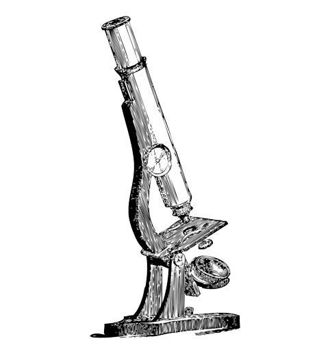

The scientific revolution was a period of significant advancements in the field of science, which began in the 16th century and lasted until the 18th century. During this time, scientists developed new methods of investigation and observation, leading to major breakthroughs in astronomy, physics, biology, and chemistry.
As well as being known for scientific discoveries, the scientific revolution is also known for the nearly complete change of having God’s Word and Creation as the basis of science to completely reject any acknowledgment of His existence and sovereignty over Creation. This allowed the theory of evolution to become accepted as fact regarding the origin of the earth, humans, and animals.
